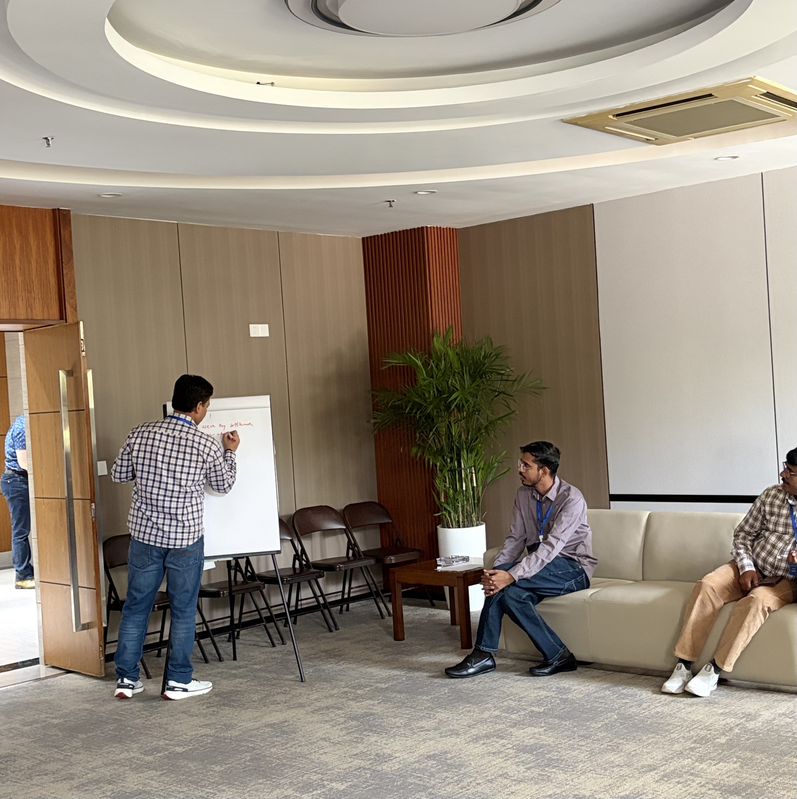

Projected shifts in dry–wet extremes and possible associated drivers over the Hindu Kush Himalaya
Examines how dry and wet extremes are projected to shift across the Hindu Kush Himalaya and the large-scale drivers behind those changes.
Read paper →Research Fellow — Earth Observatory of Singapore, NTU
I study hydroclimate extremes, compound drought, and regional climate model evaluation across South and Southeast Asia — turning model uncertainty into evidence that decision-makers can actually use.

I'm a Research Fellow at the Earth Observatory of Singapore (EOS), Nanyang Technological University, working under the Climate Transformation Programme on the physical processes and impacts of climate extremes across Singapore and equatorial Southeast Asia. My research traces hydroclimate extremes — drought, flood, and extreme rainfall — from the Indo-Gangetic Plains and Hindu Kush Himalaya through to Southeast Asian river basins, using CMIP5/CMIP6 ensembles and regional climate models to turn raw projections into evidence people can actually act on.
ECR Group Review for the IPCC Seventh Assessment Report, Working Group I (WGI).
Session: "Extreme Event: Past Present and Future."
Awarded by the German Federal Ministry of Education and Research.
Contributing to the World Climate Research Programme's Robust Information for Sustainability initiative.
Session: "Extreme Events: Observations and Modeling."
Awarded to present at AOGS 2023, Singapore.
Awarded for the AGU Fall Meeting 2022.
CCIVA 2019, Indian Institute of Technology (IIT), Kharagpur.
Examines how dry and wet extremes are projected to shift across the Hindu Kush Himalaya and the large-scale drivers behind those changes.
Read paper →Uses bias-corrected CMIP6 data across 22 Indian river basins to quantify how extreme rainfall is intensifying under a warming climate.
Read paper →Maps how the timing and intensity of extreme rainfall events have shifted across India's river basins over more than a century of records.
Read paper →Links extreme event trends to hydrological response in the transboundary Gandak basin shared by India and Nepal.
Read paper →Assesses how hydroclimate extremes across Indian river basins diverge between 1.5°C and 2°C global warming levels using CMIP6 projections.
In review




Open to collaboration, talks, and conversations about hydroclimate extremes and regional climate modeling.